BrainBay
- Using Design-Elements
BrainBay
- Using Design-Elements
The
Design-Elements (Signal Sources, Signal Targets and Processing Elements) are
fundamental parts for building a signal processing configuration in
BrainBay. Nearly all elements have a user-dialog
to adjust their parameters.
The user-dialog of an element can be displayed by right-clicking the center
of the element.
In
the following, the BrainBay design-elements and their usage will be described.
1.1 EEG-Amplifier
This
element provides an interface to the OpenEEG amplifier hardware. Currently, two
hardware designs are supported: the ModularEEG and the MonolithEEG. Both can
run different firmwares and transmission protocols: P2, P3 and P21. P21 is a
bi-directional protocol (which means that values can also be sent to the
amplifier). Using P21/bidirectional mode allows changing the baud- or
samplingrate, setting the active channels and transmitting play/stop-commands
to the device.
Additionally
to providing live-data from amplifier-hardware, the element can record and
playback archive-files. The element either works in live- or in archive mode
(not both at the same time).
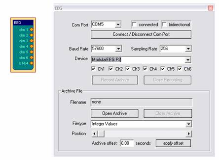
Receiving live-data from the amplifier
Connect
the amplifier to a Com-port (ModularEEG) or USB-Port (MonolithEEG), select the
appropriate Com-Port from the combo-box. Select baud- and sampling-rates
(usually 57600 baud, 256Hz), select the device/protocol which is used by the
amplifier firmware (usually ModularEEG-P2 or ModularEEG-P3). Press button Connect/Disconnect Com Port. The connected-checkbox should indicate that
the port has been connected (if not, check Com-Port and settings).
To
display live-data, connect an oscilloscope-element to the output ports of the amplifier-element,
press Play - button from the
status bar and turn on your biosignal amplifier.
Recording live-data to an archive file:
Setup
the connection to the amplifier as described above. Press button Record Archive and choose a filename and folder
to store the archive. Recording starts immideately after confirming the
filename (and starting the design). To stop the recording and close the file,
press the button Close Recording.
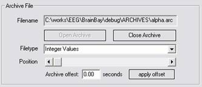
Playback of recorded archives:
Close
an eventually openend Com-Port and press the button Open Archive. A dialog will appear where an archive file can
be selected. The device- and sampling-rate settings will be modified according
to the archive. When an archive file is opened, no live-data can be processed
by the EEG-amplifier element, and the status bar extends: a slider shows
the progress of playback and can be used for positioning in the archive file.
The current position is shown in the Time
-Field.
Use
the Play-, Stop- and Reset-
buttons to control playback.
With
the In- and Out- buttons, a segment of the archive can
be defined for looped-playback. By pressing In
or Out, the current position will
be set as the new start or end - point for playback. The setting of in- and
out-points is closely related to the Oscilloscope-Element. There you can achive
the same by pressing the left or right mouse button on the timecourse of the
signal.
The
Go to - button is used for
jumping to a specified position, given in minutes:seconds.
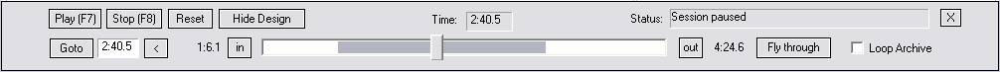
On
the bottom right of the dialog box, there are buttons to control Archive
looping and to "fly through" the archive. "Fly through"
means an uninterrupted playback of the session from in-
to out-point not at the speed of the
current sampling rate, but at the highest speed possible. This can be useful
for the calculation of statistics over a longer timespan. The outputs of some
elements like Midi-Players, Multimedia-Playback etc. are disabled when flying
through an archive.
Only
one EEG-Amplifier signal source
can be active in a given design. Nonetheless it is possible to have more than
one archive players active in the system, for example by using an EDF-File
Reader element. To align the position of an EEG-amplifier archive relatively to
other archives, an offset for the archive in seconds can be set in the user
dialog.
When
the EEG-Amplifier element is used
to receive live-data from an amplifer, the sampling rate for the whole system
is controlled by the output of the EEG-amplifier element. That means: when the
amplifier sends 512 Packets per second, all other elements will be called at
that speed.
When
playing back an archive, the sampling rate will be set according to the rate of
this archive, but the rate can be changed using the Options - dialog.
1.2. Signal Generator
The
Signal-Generator element can be used
to produce sinus-, rectangle or sawtooth-signals with selectable center,
frequency, amplitude and phase-shift.
The
signal type is selected via combo-box, the other parameters can be changed with
the respective silders. The maximum amplitude (the range of the amplitude -
slider) can be changed by right-clicking the output port of the element.
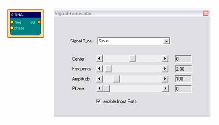
The
checkbox enable Input Ports controls
the accessibility of frequency- and phase- settings via input ports. Using the
input ports, these settings can be modified by other elements or by a user
dialog.
1.3 Constant
The
Constant element provides a fixed
value on it's output port :
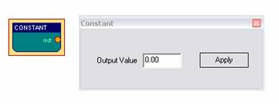
1.4 EDF-File Reader
The
EDF-File Reader element can be
used to read previously recorded file in European Data Format. EDF is a format
for the exchange for biological signals
(see
http://www.edfplus.info).
The header of an EDF file stores various information about the recording: date,
patient data, recording device, sampling rate, data segments, signal ranges and
descriptions for the data channels.
This
information is displayed in the user dialog of the EDF-File Reader element after a valid file has been opened.
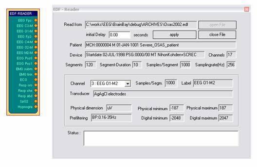
Choose
a channel from the combo box to display it's information. EDF-files can have
many channels. However, BrainBay's channel limit is set to 32. The signal range
of the output ports is set by Physical
Minimum to Physical Maximum
of the corresponding channel. Similar to the EEG-Amplifier
archive playback, the status bar extends when an EDF-archive has been opened
successfully, to enable playback control and positioning in the archive. (see EEG-Amplifier element). The field Initial delay allows specifying an offset
to align this archive file with other files for playback.
1.5 TCP-Receive
Similar
to the EDF-Reader element, the TCP-Receive element provides EDF channel
data to other elements. The difference is that the data comes from a network connection
and not from a local file. The TCP-Receive
element connects to the neuroserver software framework by Rudi Cilibrasi which
is also part of the OpenEEG project (see http://openeeg.sourceforge.net/doc/sw/NeuroServer).
To use the TCP-Receive element, a neuroserver has to be running on a known host
in the network or on the local host. Sending- and receiving clients can
connect to this service. Thus, clients can send / receive live biosignal data
and recorded EDF-archives to / from the neuroserver:
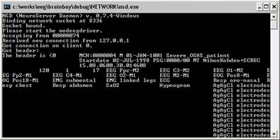
An
easy way to test the TCP-Receive
element is to start a neuroserver and an EDF-reading client on the local host
(by using the Network- entry from
the main menu) The figure shows the running service, with an EDF-client
connected.
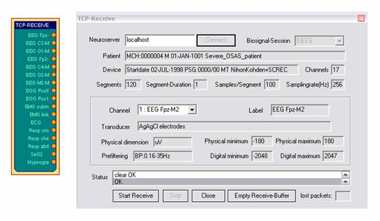
Connecting the TCP-Receive element to the neuroserver service
Enter
the IP-adress of the host computer where the service is running into the field Neuroserver of the element's user dialog.
(when running a local service type 'localhost'). Press the Connect - button. In case of a successful
connection, the Status-listbox
will show the line 'OK' and the
combo-box Biosignal-Session will
be filled with the available sessions from the neuroserver. Choosing one of the
sessions will open the EDF-stream, display the header information and update
the element's output ports. The port ranges for the output ports are obtained
from the channel-information of the EDF-file.
During
data reception, the progress in packets is shown in the Status-listbox of the user dialog. Use the
Stop -button to bypass reception
and Close to disconnect from the
neuroserver.
Please
take into account that there will be some delay in the transmission, depending
on network bandwidth and other factors like the receive buffer for incoming
values. The button Empty Receive-Buffer discards
packets that are currently buffered
1.6 Camera (Webcam)
The
Camera element can be used to process a video stream from a local camera
(usually a webcam) and perform face- and movement-detection. For image- processing,
the Intel Open Computer Vision library
was used. (OpenCV, see http://www.intel.com/research/mrl/research/opencv
)
In
particular, three tasks can be performed by the Camera element:
-
Record a live-videostream to an .avi - file to harddisk
-
Playback of an .avi - file from harddisk
-
use a face detection - and feature tracking algorithm to output the estimated
position of the user's nose and chin. Together with the Mouse Controller -
element, this information can be used to control the cursor and
clicking.
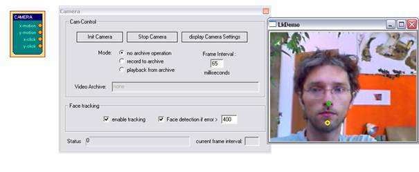
To
use the camera element, a webcam or another camera needs to be connected and visible
to the system (installation of correct device drivers etc). After inserting the
camera element into the design, the device is openend and the live-stream is
displayed in a seperate window.
The
capture interval can be set using the field Frame
Interval of the element's user dialog. The interval has to be given
in milliseconds, and should not be longer than about 65 milliseconds to get 15
frames per second. The value strongly depends on the webcam used and the
overall system performance. Using a good webcam, 25 frames per second can be
captured using a 1,6 Ghz machine with USB 2.0. The button Display Camera Settings calls the settings
dialog of the webcam. There, camera-specific parameters like contrast or the
frame rate can be adjusted.
Three radio-buttons control the mode for the Camera-element:
'No archive operation' is usually used for
feature tracking (head-mouse designs).
When 'Record to archive'
is pressed, an open-file dialog can be used to choose a filename and folder for
the avi-file. Then, a dialog for codec-selection appears. The codec compresses
the image frames befor writing them to disk. Choose a codec that does not use
much processor time ('uncompressed'
is surely the fastest, but gives very large video archives, 'Cinepak' or 'Microsoft video1' are possible alternatives). After
selecting the codec and starting the design, the video frames are written to
the file until the Stop Camera -
button is pressed, which also closes the archive file.
'Playback from archive' also displays an
open-file dialog where the .avi file of a previous recording can be chosen.
After starting the design, the video stream will be delivered from the archive
and not from the webcam. This is also possible wehn no webcam is installed in
the system.
Feature Tracking
If
the switchbutton 'enable tracking' is checked, the element will perform a
Haar-Cascade detection of a frontal human face on the videostream from camera
or video archive file. When a face has been found, the nose and chin positions
are estimated and followed by an optical flow algorithm. The coordinates of
nose an chin relative to the last image are sent to the element's output port.
After appropriate filter- and resize-operations, these coordinates can be used
by the Mouse-Controller element
to perform mouse movement and clicking operations (for details see the
Camera-Mouse example design)
1.7 Skindialog
The
Skindialog Element provides a custom draw, skinned user dialog to the design.
Buttons and sliders with mouse-sensitive areas can be defined using and .ini
-file and bitmap graphics. The current values of the sliders or button states
are presented at the element's output port. Thus, special dialogs can be drawn
to support users in the access or key features of a complicated design.
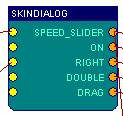
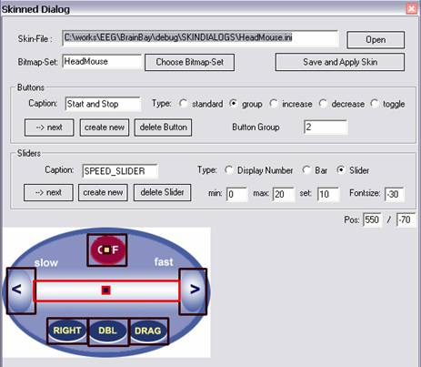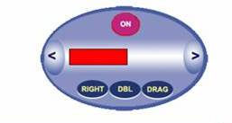
The
skinned dialog is created an adjusted using a graphical editor that allows the
definition of active areas of a Bitmap-graphic
(.bmp). A set of three Bitmaps is needed to
successfully define a skinned dialog:
<skinname>_Active.bmp
<skinname>_Selected.bmp
and
<skinname>_Mask.bmp,
where
<skinname> stands for the chosen name of the skin. The Active-.bmp defines the view of the interface
in idle mode, the Selected-.bmp shows how all buttons look when they are
pressed, and the Mask-.bmp gives the contours of the skinned user dialog (using
a monochrome bitmap that defines all areas that belong to the dialog by black
colour and all other areas by white color)
Using
the editor, the user can create, modify and delete Buttons and Sliders. The
active areas of these elements are drawn into the displayed bitmap
(<skinname>_Active.bmp) with the mouse.
Buttons
can be of type standard (Pushbutton), group (Radio-Button), toggle (MouseOver-Button) or increase and
decrease a slider value. The output generated by one button on the output port
will be 1 if the button is active and INVALID_VALUE if the button is inactive.
In case the button increases or decreases a slider, it will not have a seperate
output port, but it will change the value of the output port of the respective
slider
Sliders
can have values from min to max and show the current position as a moving knob, a
progress bar or as a plain number. A slider can be connected to two buttons
that increase or decrease its value.
Using
the input ports of the element, slider- or button values can be set by other
elements. Thus, a current state of values can be shown in the skinned user dialog
automatically.
The
description of the Skinned Dialog is stored in an .ini-File in the subdirectory
SKINDIALOGS. It contains the filenames of bitmap-graphics, and the definitions
of the active elements (see the skin_readme.txt file in subdirectory Skindalogs for more details.)
By
pressing Save and Apply Skin, the ini-File will
be created and the skinned dialog will be generated.
As
the signal source elements deliver biological data, simulated waveforms and
other signals, we need some processing elements to perform signal adjustments,
transformations, apply thresholds or combine singnals to get the desired
parameters for the feedback processes. BrainBay currently has 19 signal
processing elements which will be introduced below:
2.1 Averager
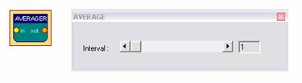
The
Averager element puts out the
mathematical average of the last n samples. The number of samples can be selected
by the Interval scroll bar.
2.2 Comparator
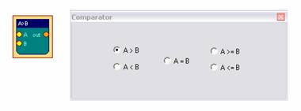
This
element compares it's two input values in a way given by the user.
When
the selected condition is fulfilled, the value of input A is routed to the
elements output port. If not, the output of the element will be INVALID_VALUE
(this is a representation of boolean false). In case one of the inputs is
INVALID_VALUE, the output of the element will be INVALID_VALUE as well.
2.3 Correlation
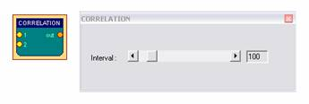
This
element calculates the cross-correlation between the two signals connected to
input 1 and input 2 in a selectable Interval
of samples. Correlation is a measurement for the linear relationship
between the two signals. The output will be between 1 (fully correllated) 0
(uncorrelated) and -1 (fully inverse correlated).
2.4 Counter / Display
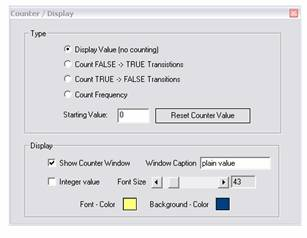
Depending
on the selected type, the Counter
element is used to count transitions from or to INVALID_VALUE, measure frequency
of true-false transistions (in Hz) or show the plain input value without
counting. The value of the counter is presented at it's output port, and, if
desired, in a seperate window as an integer of float value. The counter can be
set to an initial value by pressing Reset
Counter Value. This reset of the value will also be done when the
session is resetted using the status bar. Colors of text and background and
font size can be selected in the Display-
section.
2.5 Debounce
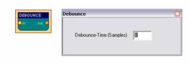
The
Debounce element can suppress frequent changes to INVALID_VALUE. This could be
used to constrict the generation of events when a signal is close-by a
threshold level. The interval is given in samples.
2.6 ERP - Detector (Pattern Recognition)
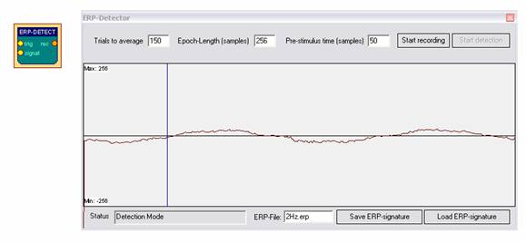
The
ERP-Detect element can record and
detect signal patterns in time domain. It can be used to perform trial
averaging, what is a popular technique for extracting event related potentials
(ERPs) from a noisy EEG signal. The Epoch-length
of the trials, the pre-trigger interval and the number of trials can be written
into the input fields. The display range is obtained from the signal input ports. Adjust this range by
right-clicking these input ports.
The button Start recording activates
the recording- and averaging-mode of the element. In this mode, the element
waits for a TRUE value on it's trigger
input-port. This trigger singnal could come from a threshold - element, from an
external switch-button or from a signal generator etc. After the trigger signal
has been received, epoch-length samples
are recorded from all of the connected input signals and added to the internal
buffer of the element. Then the next trigger input is awaited and the next
trial is recorded. After a number of averagings of a phase-locked signal, the noise
gets less due to the averaging process and the exctracted signal remains.
The
recorded signal can be saved to an .erp file. When the ERP-Detect element is not in it's
recording state, it's continuously calculates the similarity between the
recorded signal and the last epoch length
samples that came into it's singal
input-ports. Different methods for calculationg this similarity can be chosen
form the combo-box, like correlation (which will give values from -1 to 1) or
weighted difference of sample values (which will give values from 0 - 100 %
similarity).
2.7 Expression Evaluator
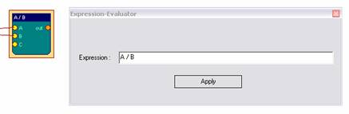
The
Expression Evaluator can have up
to six input ports, which automatically extend when a signal is connected. The
input signals are referred to as A, B, C, D, E, F and can be combined with
decimal constants, elementary functions, unary and binary operations to a
mathematical expression that is evaluated when the session is running. The
result of the expression is presented at the element's output port.
The evaluator implementation builds upon the open source library
GNU-Libmatheval.
(see
http://www.gnu.org/software/libmatheval)
Supported
elementary functions are:
exponential (exp), logarithmic (log), square root (sqrt), sine (sin), cosine
(cos),
tangent (tan), cotangent (cot), secant (sec), cosecant (csc),
inverse sine (asin), inverse cosine (acos), inverse tangent (atan),
inverse cotangent (acot), inverse secant (asec), inverse cosecant (acsc),
hyperbolic sine (sinh), cosine (cosh), hyperbolic tangent (tanh),
hyperbolic cotangent (coth), hyperbolic secant (sech), hyperbolic cosecant
(csch),
hyperbolic inverse sine (asinh), hyperbolic inverse cosine (acosh),
hyperbolic inverse tangent (atanh), hyperbolic inverse cotangent (acoth),
hyperbolic inverse secant (asech), hyperbolic inverse cosecant (acsch),
absolute value (abs), Heaviside step function (step) with value 1 defined
Supported
unary operation is unary minus ('-').
Supported
binary operations are:
addition ('+'), subtraction ('+'), multiplication ('*'),
division multiplication ('/') and exponentiation ('^').
Usual
mathematical rules regarding operation precedence apply.
Parenthesis
('(' and ')') could be used to change priority order.
Blanks
and tab characters are allowed in string representing function;
newline
characters must not appear in this string.
2.8 Filter
The
Filter element provides digital low-pass, high-pass, band-pass or band-stop
filters. A low pass filter will filter out high frequencies and let low
frequencies pass the filter. A high pass filter does the opposite - it will
filter out low frequencies and let high frequencies pass. A band pass filter
will filter out lower and higher frequencies and let middle frequencies pass
the filter. A band stop filter will filter out the middle frequencies and let
lower and higher frequencies pass the filter.
The
filter can have bessel- or butterworth - type. The bessel-filter has a slower
roll-off in frequency domain (meaning it is less precise in attenuating around
it's corner frequencies) but does not have so much ringing (overshoouting) in
time domain.
The Filter Type, Filter Order and the frequency - limits
for the filer can be selected in the user dialog. A higher filter order
gives a sharper response in frequency domain but a longer delay in time domain.
When the button Apply is pressed,
the filter response in frequency domain is shown in the given display range.
The display range can be adjusted be typing new values in the bottom left and
bottom right fields.
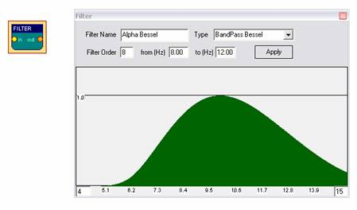
The
filter shown above lets frequencies around 10Hz pass without attenuation.
Frequencies below 6 Hz or above 14 Hz are attenuated heavily. For more information
on the usage of filters see the design examples. The Filter - element uses the free FidLib
library by Jim Peters and Tony Fisher (see http://uazu.net/fiview)
2.9 FFT (spectral analyser)
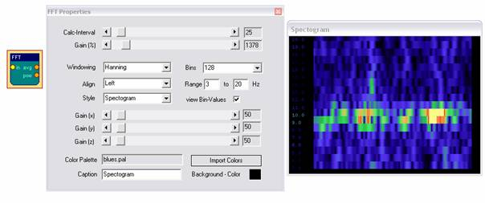
The
FFT element performs a fast
fourier transformation on the connected signal. This shows the frequency
components that are present in the signal, just like the ear can detect the
different tone-heights that are present in a sound. Using the FFT -element, the
changing frequency-components of for example brainwaves can be displayed as a
bar-graph, spectogram or 3d- landscape. The kind of display can be changed
using the Style combo-box.
The Calc-Interval sets the number
of samples that are buffered before the next transformation is done. An
interval of 25 samples gives about 10 transformations per second at 256 Hz
sampling rate.
The
number of Bins defines the
distinct frequency components (= bands). Many bins give good frequency
resolution but slow reaction in time. Range selects
the bands to be displayed (in Hz). Align
(left, right, bottom) rotates the display.
A color palette can be used to map the intensity information to colors, what is
necessary in the 2d and 3d - views (for usage of the color palettes see palette
editor).
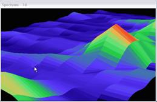The Gain (%)
amplifies or attenuates the signal before the FFT is done. The Gain(x),
-(y) and -(z) affect the display and are effective in the 2d and 3d
views.
When using the 3d -display, left- or right- clicking and dragging the display
window will change angle or position of the view (see section design examples).
The
FFT-element has two output ports: Average
and Power. The first gives the
average freuquency of the bands in the selected range, the second gives the
average power (magnitude) of the bands in the selected range.
The
Integrator element continuously
sums the incoming values. Pressing Reset
sets the buffer to zero, this is also done when starting or resetting the
session.
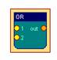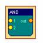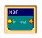
The
logical And, Or and Not
elements do not have user dialogs. They perform the logical
operations on the inputs and output the result.
And outputs
TRUE_VALUE when none of it's inputs is INVALID_VALUE
Or outputs TRUE_VALUE when at
most one input is INVALID_VALUE
Not outputs TRUE_VALUE when the
input is INVALID_VALUE
In
all other cases, the elements will output INVALID_VALUE
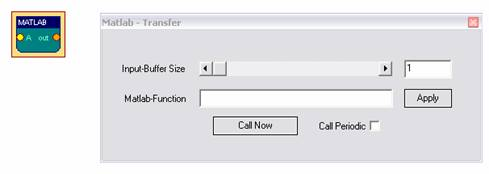
The
Matlab - element can be used to transfer sample buffers to the Matlab
application for further processing (see http://www.mathworks.com). Matlab is commonly
used in academic and scientific signal processing. As this is a commercial
application, the needed .dlls cannot be delivered with brainbay, and the
Matlab-element will only work if you have a licenced version of matlab on your
system.
The
element can process up to six input ports named A, B, C, ...
During
operation, the input values will be collected in buffers of given size. By
pressing Call Now, the buffers are transferred to Matlab and can be accessed
via the Matlab-variables A, B, C ... and a Matlab-function of given name will
be called. The result (the ANS-variable) will be transferred back to BrainBay
and presented on the output of the Matlab-element.
When
Call Periodic is selected, the
transfer will be done automatically when a new sample arrives, this will only
work for matlab-functions with low complexity / short execution time.
2.13 Magnitude
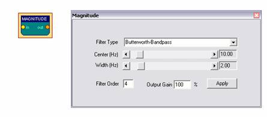
The
Magnitude - element can be used
to calculate the activity in a certain frequency -range of a singal. This is
oftern referred to as 'power in pass-band'. The filter type the is selected via
combox-box can be Bessel-Bandpass
or Butterworth-Bandpass. (for
more details on filters see the Filter
- element or Jim Peter's FiView -
application, http://uazu.net/fiview).
The Center (Hz) and Width (Hz) - parameters adjust the
pass-band, where activity shall be measured. Example: when you want to measure
Alpha-frequencies of brainwaves in the range from 10 to 12 Hz, select a center
of 11 Hz and a width of 2 Hz for the filter. The filter order controls the
'sharpness' of the cut-off of unwanted freuqency-ranges. A higher order gives
better cut-off, but the response of the filter in time will be less accurate.
The Magnitude - element outputs
the activity in the given passband, a gain value (in %) can be applied to
amplify the output.
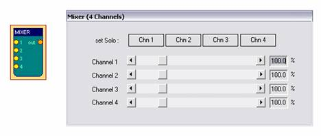
The
Mixer - element can be used to
merge up to four input signals into one output signal. The amplification-ratios
are given with the corresponding silder-bars. Using the buttons Chn1 - Chn4,
presets for solo-output of the selected channel are activated.
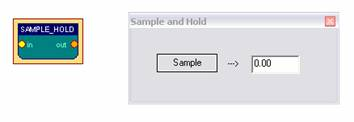
The
Sample-Hold - element stores the current
input-value when the button Sample is
pressed. This value will be present at the output-port until another value is
stored using the button.
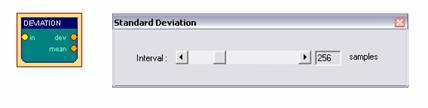
This
Element calculates standard deviation and mean of n samples and puts the results to the ouput ports. The
number of samples for the calculation interval can be set using the slider bar.
2.17 Threshold / Meter
The
Threshold - element combines the following functionalities:
-
Averaging and amplification or attenuation of the incoming signal
(using the slider bars from the Preparation
- section )
-
Setup of fixed upper- und lower bounds for the signal (thresholds)
If the values are not
in the specified range, the elements outputs
INVALID_VALUE, otherwise the signal will be passed to the output port.
- Generation of dynamic upper
and lower bounds, using a percentage of the
previous n samples
-
Passing only rising or falling values
-
Display of a Meter - window to
show the current value of the signal and the upper
and lower bounds
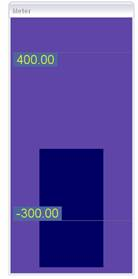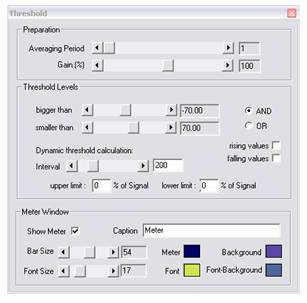
The
minimum and maximum values of the slider-bars for threshold selection are
obtained from the connected input signal. This range can be adjusted by
right-clicking the input port. Dynamic calculation of thresholds will be
performed if non-zero values are used for the upper
limit or lower limit -
parameters: the new threshold values will be set to in-/exclude a
given percentage from the last Interval
number of values. If rising- or falling values is selected, only
progressive or regressive values will pass the threshold. In the Meter Window - section, font size, bar
size, colors and caption for the meter display can be selected. The Threshold
element is a useful tool for feedback-purposes, where the reaching a certain
state like high or low activity is desired. Combined with for example a
2.18 Translate
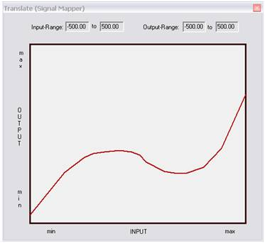
The
Translate - element is a signal-mapper, which transforms the input value of a
signal to a given output value. Using the dialog, the user can draw a desired
curve that defines this mapping with the mouse. The input and output ranges are
given by the port settings and can be adjusted by right-clicking the input- or
output port.
3.1 AVI - Player
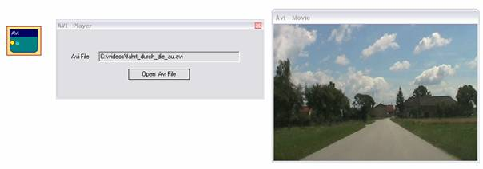
The
AVI-Player element can be used to display and navigate avi-movies. The value
that comes into the input-port of the element is interpreted as frame number.
This frame will be shown in a seperate display window. Using rising or falling
values, the movie can be watched forward or backwards. The sound of the
AVI-movie will not be present at playback (use the Media Player element to include sound output). A video-codec
that can decode the given avi-file has to be installed on the system to use the
AVI-Player element.
3.2 Com- Writer
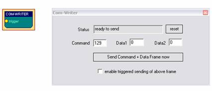
The
COM-Writer element can be used to
send command and data values to a connected Monolith-EEG amplifier in
bidirectional mode (using P21 firmware protocol) . Using the Com-Writer,
runtime options of the MonolithEEG like baud- or sampling rate can be changed
and the digital I/O- ports of the MonolithEEG can be set. One command/data
frame consist of three bytes that can be defined using the input fields of the
user dialog. The frame is sent by pressing the button. When triggered sending is enabled by the user
option, the frame will be sent every time an input different from
INVALID_VALUE is received by the trigger input-port.
3.3 EDF- Writer
The
EDF-File Writer element can be
used to created a biosignal archive in European Data Format (see http://www.edfplus.info). The
header of an EDF file stores various information about the recording: date,
patient data, recording device, sampling rate, data segments, signal ranges and
descriptions for the data channels. This information can be set using the data
fields of the user dialog.
The description for the connected channels can be set using the Channel combo-box and the corresponding
data fields. When all channels have been connected and labelled, the button Create File can be used to choose location
and file name for the EDF file to be created. The recording of channel data can
be controlled by the buttons Start Recording
and Stop Recording. After
recording, don't forget to press Close File
to finish the writing process and close the file.
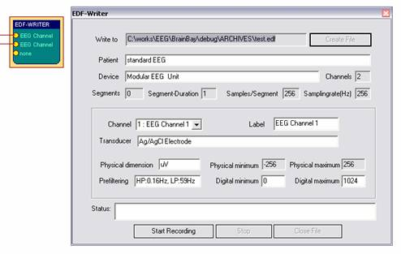
3.4 File - Writer
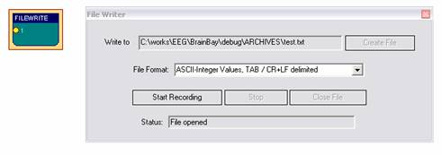
The
File-Writer element can be used
to generate a headerless file with channel data for processing in other
applications. Using the File Format
combo box, the type of storage and the delimiters for rows and columns can be
selected. When using ASCII-Integer Values,
a human-readable text file will be generated. If more than one channel is
connected to the element, the channel values will be written as columns with
commas (CSV- text file) or TABs as column seperators. As delimiters for the
rows, CR/LF - delimiters can be generated. These text files could be imported
in Microsoft Excel or other applications for display and further processing.
Using the Raw/Wav format, a one-channel binary file will be generated that
could be imported in a sound-processing application.
3.5 Oscilloscope
The
Oscilloscope is an important
element for signal display. The connected signals are viewed in a seperate window
which can be freely resized. During runtime, a data grid showing the signal
ranges and the current time can be displayed.
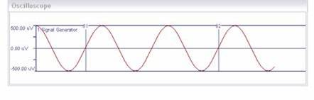
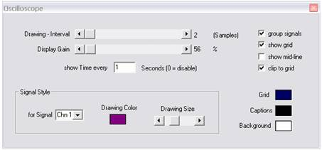
The
background color and signal colors are adjusted using the color-picker -
buttons. The Display-Gain slider
is used to amplify / attenuate all connected signals. The Drawing-Interval sets
the display speed for the óscilloscope: a selection of 1 will display every
incoming sample, a selection of 4 will display every forth sample.
If
the group option is used, the
connected signals will be shown in the same data grid, this can be useful for
directly comparing signal values. When in group-mode, the
labelling of the signal range can be set to a desired signal by clicking it's
color sign on the top of the window.
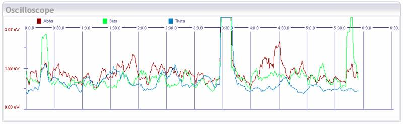
The
Oscilloscope can be used to set the In- and Out-points for archive playback by clicking into the window
at a specific time with the left respectively right mouse button.
3.6 Particle Animation
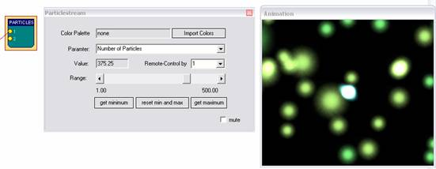
The
Particle Animation element
provides a graphical particle system that can be controlled using signal values
from up to six input ports. The particle system can produce nice visual effects
like color fountains, flames, star-flights or, in combination with signal
generators, moving circles and other geometric figures in 3d. The System can be
influenced by changing the current parameter using the Range silder-bar.
Paramters
for the Particle System:
Number of Particles, Generation Interval
Slowdown, Color
X-, Y-, Z- Position
X-, Y-, Z- Speed
X-, Y-, Z- Gravity
Life Span, Randomizer
Recommended
usage of the Particle System:
-
select a color palette for the particles (see palette editor)
-
choose one of the above parameters from the combo box and
adjust it's value to gain a desired effect
-
repeat previous step for other parameters, until you have the effect you like
-
connect a signal to input port 1 of the element
-
select a parameter that suits well to the type of feedback you want
-
select Remote Control by 1, now
the value of this parameter will change
according to the signal connected to input port 1.
Use
the get minimum and get maximum buttons to set the current
input-value as new minimum or maximum for the parameter value. This way, the
upper and lower bounds for remote-controlling the paramter can be set.
When
reset min and max is pressed, the
min and max values will be reset to the original values for this parameter. The
best results for the particle system can be gained by using an
OpenGl-accellerated graphics card.
3.7
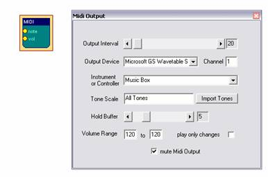
The
Midi-Output element provides Midi-Audio feedback for the connected signal. Toneheight
and volume are controlled by the connected input ports. The signal range of the
connected input signals is mapped to the selected volume range or tone scale,
it can be modified by right-clicking the input port .
The Output Interval sets the speed for tone generation: an interval of 1 will
generate a
A setting of 25 gives about 10 tones per second when a sampling rate of 256 is
used, which is still very accurate. For Output
Device, a Midi-Output device that is installed in the system and has
been enabled in the Options Menu can be selected.
Using Channel 1 - 16 allows more midi-elements with different instruments to
work in parallel. (Channel 10 usually selects the Drum-Set). The combo-box Instrument or Controller selects the
With
the button Import Tones, a
tone-scale generated with the Tone Editor
is imported and used as a harmonic filter for the midi-notes. (see Tone Editor)
The
Hold buffer sets the number of
tones that will be left on at the
same time.
When
play only changes is selected,
two consecutive notes will only be played if they are different.
3.8 Mouse Controller
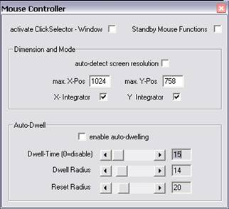
The
Mouse Controller element provides
an interface to the mouse-cursor and clicking functionalities. The current
screen-resolution should be set as maximum X- and Y- positions for the cursor.
During session runtime, the present values at the xPos- and yPos-
input ports will influence the cursor position. If the x-Integrator and y-Integrator options are selected, the
input values are interpreted as relative changes (Joystick mode), if not,
absolute positions will be used.
A
left click will be performed when a value other that INVALID_VALUE is passed to
the l-Clk input port.
Right-clicks and drag-clicks can be performed in the same way, using the r-Clk and drag
input ports. The option activate
Click-Selector displays a seperate tool-window which allows
selection of right-, double- or drag-clicks without using the corresponding
input port. Thus, a right-, double- or drag-click can be performed by choosing
the type of the next click in the click-selector window, and the special click
can be performed with the normal left-click action. The Dwell-Time can be used to perform a
left-click operation by holding the mouse cursor in a given screen-area for a
given time. Thus, clicking can be performed without having a seperate control
signal connected to the l-Clk
port.
The
Reset-Radius is used to prevent
permanent clicking in Dwell-mode: the next click will be performed only in a
distance of n pixels to the previous click.
The
Mouse Controller has two output ports: reset and dtime. reset sends an impulse (a distinct value of one) when a
clicing action has been performed. This can be used to reset a user dialog,
which currently shows the next clicking action. The dtime
value represents the current value of the dwell-time, it ranges from 0 to the
setting of the dwell-time and can be used to display the time to the next
clicking action.
A
useful source for inputs to the Mouse
Controller could be the Camera
element (feature tracking enabled). After some filtering and scaling, the
estimated face positions that are put out by the Camera element set the cursor
position for the mouse and give a functional head-mouse interface (see design examples).
3.9 Sound Player
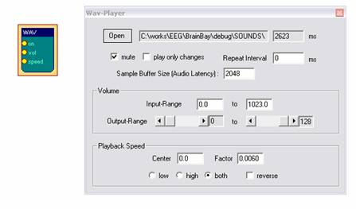
The
Sound-Player element can be used
for triggered playback of a short audio-file. Supported file formats include
wav, mp3, voc and aiff. The file could contain sound effects or reward tones of
about 1 to 20 seconds length. The element is not suited for longer music files
because of long loading / conversion times (use the Media Player element for longer files). The input-ports
control starting of the sound (on), the current volume (vol) and the playback
speed / toneheight (speed). The sound will be played when the on input is different from INVALID_VALUE.
If the option play only changes
is selected, the sound will be played only once if the value of the on input-port does not change. The Repeat Interval can be used to select a
minimum duration until the sound is triggered next time, thus a pause can be
introduced.
The Sample Buffer Size sets the
size for the internal playback buffer, this value affects the audio latency /
system performance. Using values < 4096 is recommended for accurate
playback.
The
ranges for volume (Input-Range)
and speed (Center and Factor) are obtained from the connected
input signals and can be set manually by changing the values in the user
dialog. The reverse option
changes speedup or slowdown of the sound when the speed input values rise. The Center - value sets the value for playback at original speed
and the Factor - value sets the
gain for speed-changes.
3.10 TCP - Sender
The
TCP-Sender element can be used to
transfer signal channels via network, using the neuroserver software by Rudi
Cilibrasi. To establish connection, a neuroserver has to be running on a known host
computer in the network or on the local host. (see http://openeeg.sourceforge.net/doc/sw/NeuroServer).
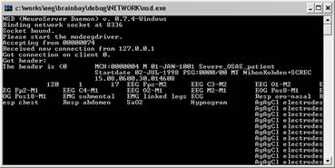
A
running neuroserver on the local host. The TCP-Sender
element connects to this service as a client which sends biosignal data in
EDF-format.
Connecting the TCP-Sender element to the neuroserver service
As
in the EDF-Writer element, the first thing to do is to fill out the
descriptions for the EDF data header and channel information (see EDF-Writer
element). The signal range for a specific channel is obtained from the
connected input signal, it can be modified by right-clicking the input port. To
connect to the neuoserver, enter the IP-adress of the host computer where the
service is running into the field Neuroserver
of the element's user dialog. (when running a local service type 'localhost').
Press the Connect - button. In
case of a successful connection, the Status-listbox
will show the lines 'Entering EEG mode' and 'OK'.
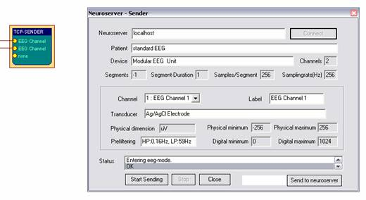
Start Sending and Stop are used to contol the data flow to the neuroserver. The button Send to neuroserver directly sends a neuroserver command written in the text field to a connected service. Use Close to disconnect from the service.
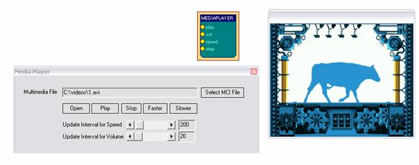
The
media player element uses the Windows MCI interface to playback video or
sound-files. AVI, WMV, WAV, MP3 and other formats could be used. After a
mediafile has been selected, it is played by receiving a value different from
INVALID_Value at it's play input
port. Volume and playback speed can be adjusted by the Vol and speed
ports, where a value of 1000 sets full value or normal speed. Update Intervals
for vol and speed have to be set according to system
performance because these functions are time-consuming. Inputs into the step port cause a video file to step one
frame forward.
4 Other Elements
4.1 Documentation
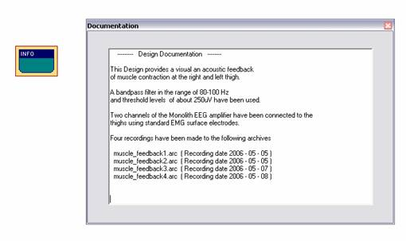
The
Documentation element simply
provides a text box. It can be useful to describe the overall purpose of the
design, special design elements or archive files that have been recorded with
this design.
4.2 Ballgame
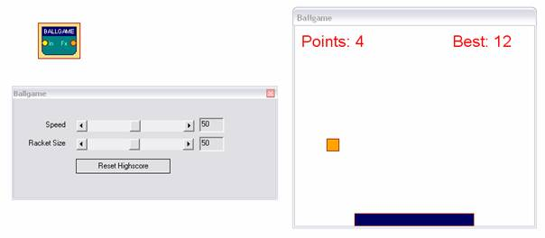
The
ballgame is an example for a feedback-game, implementing a low-end version of
the classic 'arkanoid' - arcade game originating in the early 80ties. The
purpose of the game is to catch the ball with the moving bar (the racket). The
position of the racket is contolled by the input port of the element. Racket Size and Speed of the ball can be controlled via the user dialog. The
best number of hits is displayed in the game window and stored by the element.
next: Design Examples